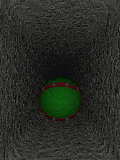

The boulder trap image was created using POV-Ray, an amazing (and free!) raytracer. The corridor is formed by subtracting a superellipsoid from a large box. The superellipsoid approximates the 10 foot wide and 15 foot high tunnel through the rock. In the adventure the tunnel is curved in a spiral, but that is more difficult to model so I made the tunnel straight. The boulder is a sphere. The image source is available.
It wasn't really green with spiked leather collars, it was just a rock. Several of the players in the game are addicted to Dungeon Keeper, which has spikey green boulder traps. 'Nuff said.